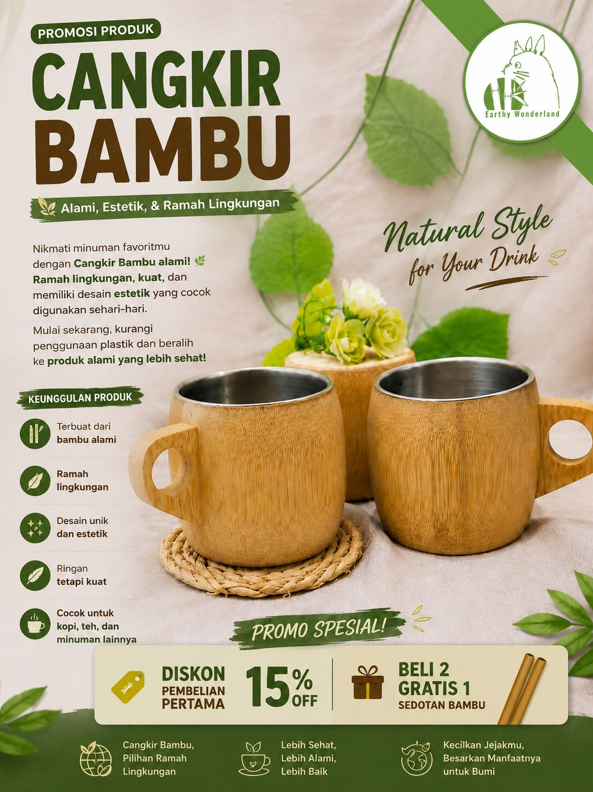

Membawa kedamaian animasi Ghibli ke dalam ritual minum kopi harianmu dengan cangkir bambu ramah lingkungan generasi modern.Dibuat .
Lihat ProdukDari alam, oleh tradisi, untuk masa depan.
Sejak berabad-abad lalu, bambu telah digunakan oleh masyarakat Asia sebagai wadah alami karena kekuatannya dan sifatnya yang menjaga kesegaran air. Di era modern ini, kami menghidupkan kembali tradisi tersebut untuk mengurangi sampah plastik dunia.
Terinspirasi dari ketenangan hutan dalam film *My Neighbor Totoro* dan keindahan *The Tale of the Princess Kaguya*, Kami ingin menciptakan produk fungsional yang membuat Anda merasa dekat dengan alam setiap hari,kami mmelihat bambu bukan sekadar bahan bangunan,melainkan simbol ketangguhan yg flekaibel dan selaras dengan bumi.
"Menjadi pelopor gaya hidup ramah lingkungan yang estetik, membawa kedamaian dan keharmonisan alam ke setiap rumah."
1. Memproduksi alat minum berkualitas tinggi dari bambu pilihan berkelanjutan.
2. Menyebarkan semangat kelestarian alam melalui desain yang puitis dan fungsional.
3. Mendukung pengrajin lokal dalam mengembangkan produk ramah lingkungan.

Rp 25.000
Cangkir bambu premium, dipotong dari bambu pilihan dan dilapisi dengan *food-grade water coating* yang aman. Memiliki serat alami yang unik di setiap cangkirnya, memberikan sensasi minum di tengah hutan yang damai.
Dapatkan katalog dan brosur digital resmi kami untuk melihat perawatan,harga grosir,dan detail spesifikasi produk kami.
Download Brosur (PDF)
Intip proses pembuatan dan estetika penggunaan Cangkir kaguya set

Proses Pemilihan Bambu
proses bagian pencetakan

proses bagian pengukiran

proses bagian peengeleman

proses bagian pengamplasan

Finishing halus dan alami